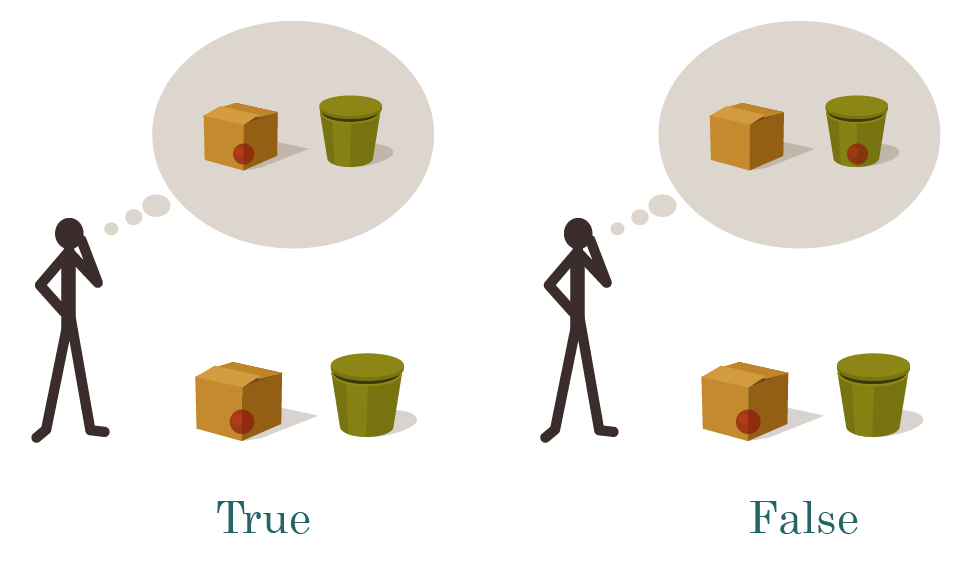
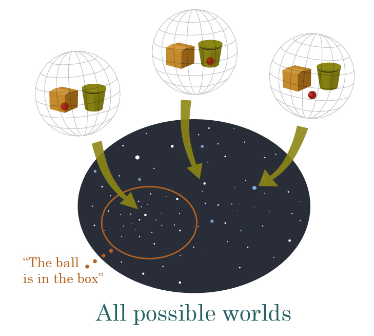
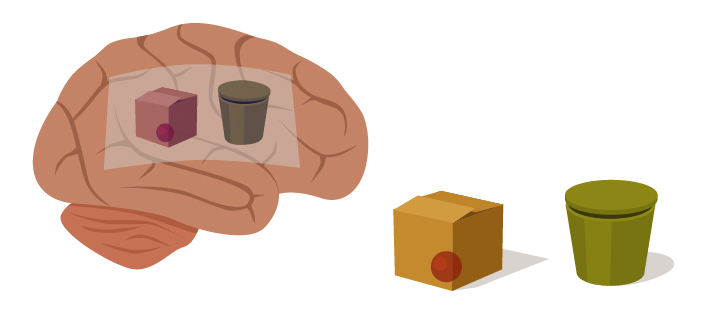
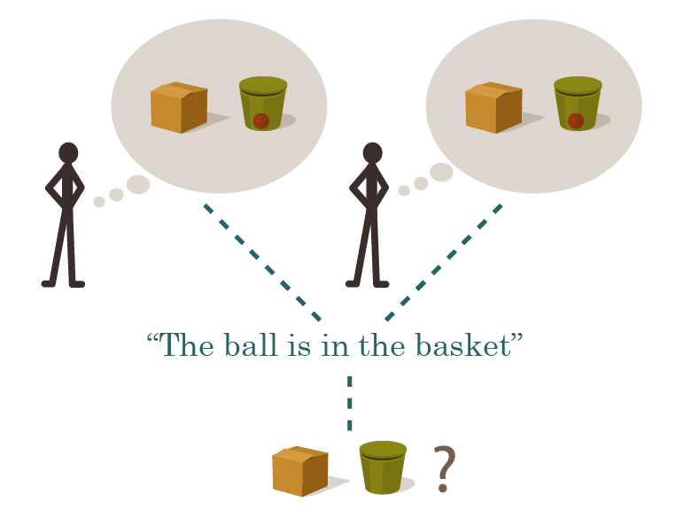
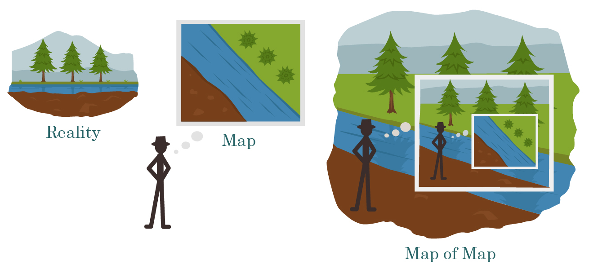
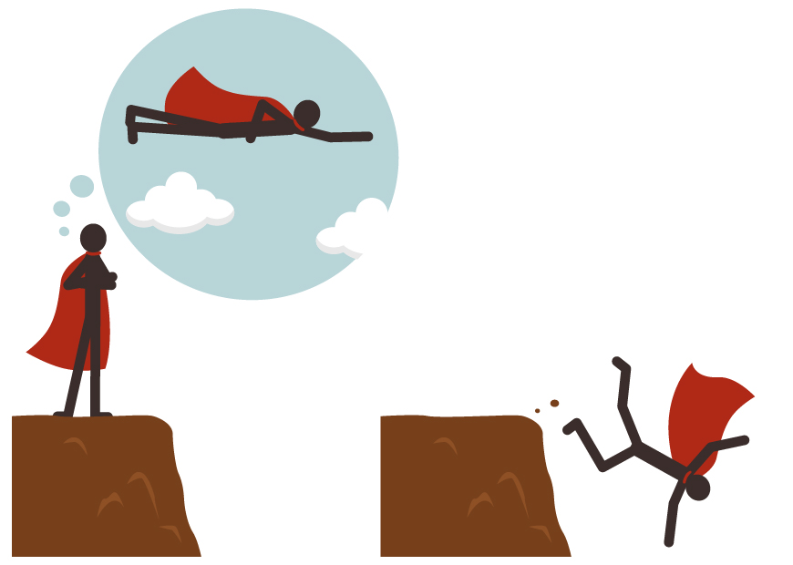
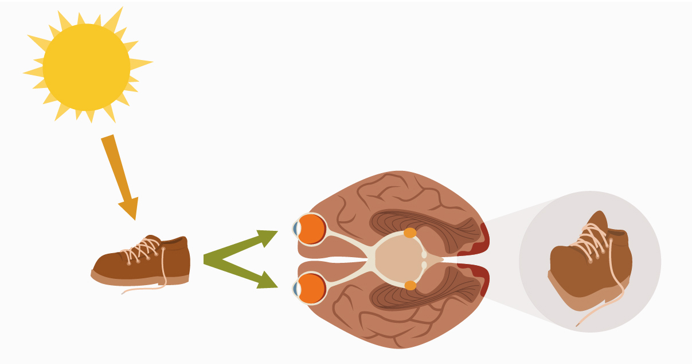
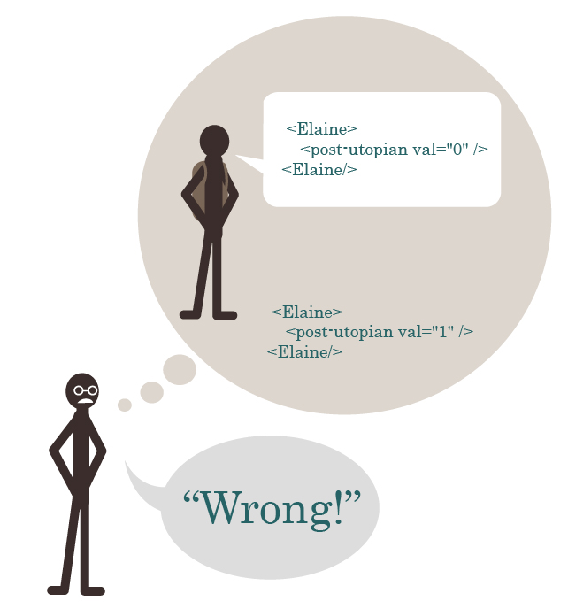

(This is the first post of a new Sequence, Highly Advanced Epistemology 101 for Beginners, setting up the Sequence Open Problems in Friendly AI. For experienced readers, this first post may seem somewhat elementary; but it serves as a basis for what follows. And though it may be conventional in standard philosophy, the world at large does not know it, and it is useful to know a compact explanation. Kudos to Alex Altair for helping in the production and editing of this post and Sequence!)
I remember this paper I wrote on existentialism. My teacher gave it back with an F. She’d underlined true and truth wherever it appeared in the essay, probably about twenty times, with a question mark beside each. She wanted to know what I meant by truth.
-- Danielle Egan
I understand what it means for a hypothesis to be elegant, or falsifiable, or compatible with the evidence. It sounds to me like calling a belief ‘true’ or ‘real’ or ‘actual’ is merely the difference between saying you believe something, and saying you really really believe something.
-- Dale Carrico
What then is truth? A movable host of metaphors, metonymies, and; anthropomorphisms: in short, a sum of human relations which have been poetically and rhetorically intensified, transferred, and embellished, and which, after long usage, seem to a people to be fixed, canonical, and binding.
-- Friedrich Nietzche
The Sally-Anne False-Belief task is an experiment used to tell whether a child understands the difference between belief and reality. It goes as follows:
-
The child sees Sally hide a marble inside a covered basket, as Anne looks on.
-
Sally leaves the room, and Anne takes the marble out of the basket and hides it inside a lidded box.
-
Anne leaves the room, and Sally returns.
-
The experimenter asks the child where Sally will look for her marble.
Children under the age of four say that Sally will look for her marble inside the box. Children over the age of four say that Sally will look for her marble inside the basket.

(Attributed to: Baron-Cohen, S., Leslie, L. and Frith, U. (1985) ‘Does the autistic child have a “theory of mind”?’, Cognition, vol. 21, pp. 37–46.)
Human children over the age of (typically) four, first begin to understand what it means for Sally to lose her marbles - for Sally's beliefs to stop corresponding to reality. A three-year-old has a model only of where the marble is. A four-year old is developing a theory of mind; they separately model where the marble is and where Sally believes the marble is, so they can notice when the two conflict - when Sally has a false belief.

Any meaningful belief has a truth-condition, some way reality can be which can make that belief true, or alternatively false. If Sally's brain holds a mental image of a marble inside the basket, then, in reality itself, the marble can actually be inside the basket - in which case Sally's belief is called 'true', since reality falls inside its truth-condition. Or alternatively, Anne may have taken out the marble and hidden it in the box, in which case Sally's belief is termed 'false', since reality falls outside the belief's truth-condition.

The mathematician Alfred Tarski once described the notion of 'truth' via an infinite family of truth-conditions:
-
The sentence 'snow is white' is true if and only if snow is white.
-
The sentence 'the sky is blue' is true if and only if the sky is blue.
When you write it out that way, it looks like the distinction might be trivial - indeed, why bother talking about sentences at all, if the sentence looks so much like reality when both are written out as English?
But when we go back to the Sally-Anne task, the difference looks much clearer: Sally's belief is embodied in a pattern of neurons and neural firings inside Sally's brain, three pounds of wet and extremely complicated tissue inside Sally's skull. The marble itself is a small simple plastic sphere, moving between the basket and the box. When we compare Sally's belief to the marble, we are comparing two quite different things.

(Then why talk about these abstract 'sentences' instead of just neurally embodied beliefs? Maybe Sally and Fred believe "the same thing", i.e., their brains both have internal models of the marble inside the basket - two brain-bound beliefs with the same truth condition - in which case the thing these two beliefs have in common, the shared truth condition, is abstracted into the form of a sentence or proposition that we imagine being true or false apart from any brains that believe it.)

Some pundits have panicked over the point that any judgment of truth - any comparison of belief to reality - takes place inside some particular person's mind; and indeed seems to just compare someone else's belief to your belief:

So is all this talk of truth just comparing other people's beliefs to our own beliefs, and trying to assert privilege? Is the word 'truth' just a weapon in a power struggle?
For that matter, you can't even directly compare other people's beliefs to our own beliefs. You can only internally compare your beliefs about someone else's belief to your own belief - compare your map of their map, to your map of the territory.
Similarly, to say of your own beliefs, that the belief is 'true', just means you're comparing your map of your map, to your map of the territory. People usually are not mistaken about what they themselves believe - though there are certain [http://lesswrong.com/lw/i4/belief_in_belief/] exceptions [http://lesswrong.com/lw/s/belief_in_selfdeception/] to this rule - yet nonetheless, the map of the map is usually accurate, i.e., people are usually right about the question of what they believe:

And so saying 'I believe the sky is blue, and that's true!' typically conveys the same information as 'I believe the sky is blue' or just saying 'The sky is blue' - namely, that your mental model of the world contains a blue sky.
Meditation:
If the above is true, aren't the postmodernists right? Isn't all this talk of 'truth' just an attempt to assert the privilege of your own beliefs over others, when there's nothing that can actually compare a belief to reality itself, outside of anyone's head?
(A 'meditation' is a puzzle that the reader is meant to attempt to solve before continuing. It's my somewhat awkward attempt to reflect the research which shows that you're much more likely to remember a fact or solution if you try to solve the problem yourself before reading the solution; succeed or fail, the important thing is to have tried first . This also reflects a problem Michael Vassar thinks is occurring, which is that since LW posts often sound obvious in retrospect [http://lesswrong.com/lw/im/hindsight_devalues_science/], it's hard for people to visualize the diff between 'before' and 'after'; and this diff is also useful to have for learning purposes. So please try to say your own answer to the meditation - ideally whispering it to yourself, or moving your lips as you pretend to say it, so as to make sure it's fully explicit and available for memory - before continuing; and try to consciously note the difference between your reply and the post's reply, including any extra details present or missing, without trying to minimize or maximize the difference.)
...
...
...
Reply:
The reply I gave to Dale Carrico - who declaimed to me that he knew what it meant for a belief to be falsifiable, but not what it meant for beliefs to be true - was that my beliefs determine my experimental predictions, but only reality gets to determine my experimental results. If I believe very strongly that I can fly, then this belief may lead me to step off a cliff, expecting to be safe; but only the truth of this belief can possibly save me from plummeting to the ground and ending my experiences with a splat.

Since my expectations sometimes conflict with my subsequent experiences, I need different names for the thingies that determine my experimental predictions and the thingy that determines my experimental results. I call the former thingies 'beliefs', and the latter thingy 'reality'.
You won't get a direct collision between belief and reality - or between someone else's beliefs and reality - by sitting in your living-room with your eyes closed. But the situation is different if you open your eyes!
Consider how your brain ends up knowing that its shoelaces are untied:
- A photon departs from the Sun, and flies to the Earth and through Earth's atmosphere.
- Your shoelace absorbs and re-emits the photon.
- The reflected photon passes through your eye's pupil and toward your retina.
- The photon strikes a rod cell or cone cell, or to be more precise, it strikes a photoreceptor, a form of vitamin-A known as retinal, which undergoes a change in its molecular shape (rotating around a double bond) powered by absorption of the photon's energy. A bound protein called an opsin undergoes a conformational change in response, and this further propagates to a neural cell body which pumps a proton and increases its polarization.
- The gradual polarization change is propagated to a bipolar cell and then a ganglion cell. If the ganglion cell's polarization goes over a threshold, it sends out a nerve impulse, a propagating electrochemical phenomenon of polarization-depolarization that travels through the brain at between 1 and 100 meters per second. Now the incoming light from the outside world has been transduced to neural information, commensurate with the substrate of other thoughts.
- The neural signal is preprocessed by other neurons in the retina, further preprocessed by the lateral geniculate nucleus in the middle of the brain, and then, in the visual cortex located at the back of your head, reconstructed into an actual little tiny picture of the surrounding world - a picture embodied in the firing frequencies of the neurons making up the visual field. (A distorted picture, since the center of the visual field is processed in much greater detail - i.e. spread across more neurons and more cortical area - than the edges.)
- Information from the visual cortex is then routed to the temporal lobes, which handle object recognition.
- Your brain recognizes the form of an untied shoelace.

And so your brain updates its map of the world to include the fact that your shoelaces are untied. Even if, previously, it expected them to be tied! There's no reason for your brain not to update if politics aren't involved. Once photons heading into the eye are turned into neural firings, they're commensurate with other mind-information and can be compared to previous beliefs.
Belief and reality interact all the time. If the environment and the brain never touched in any way, we wouldn't need eyes - or hands - and the brain could afford to be a whole lot simpler. In fact, organisms wouldn't need brains at all.
So, fine, belief and reality are distinct entities which do intersect and interact. But to say that we need separate concepts for 'beliefs' and 'reality' doesn't get us to needing the concept of 'truth', a comparison between them. Maybe we can just separately (a) talk about an agent's belief that the sky is blue and (b) talk about the sky itself. Instead of saying, "Jane believes the sky is blue, and she's right", we could say, "Jane believes 'the sky is blue'; also, the sky is blue" and convey the same information about what (a) we believe about the sky and (b) what we believe Jane believes. We could always apply Tarski's schema - "The sentence 'X' is true iff X" - and replace every instance of alleged truth by talking directly about the truth-condition, the corresponding state of reality (i.e. the sky or whatever). Thus we could eliminate that bothersome word, 'truth', which is so controversial to philosophers, and misused by various annoying people.
Suppose you had a rational agent, or for concreteness, an Artificial Intelligence, which was carrying out its work in isolation and certainly never needed to argue politics with anyone. The AI knows that "My model assigns 90% probability that the sky is blue"; it is quite sure that this probability is the exact statement stored in its RAM. Separately, the AI models that "The probability that my optical sensors will detect blue out the window is 99%, given that the sky is blue"; and it doesn't confuse this proposition with the quite different proposition that the optical sensors will detect blue whenever it believes the sky is blue. So the AI can definitely differentiate the map and the territory; it knows that the possible states of its RAM storage do not have the same consequences and causal powers as the possible states of sky.
But does this AI ever need a concept for the notion of truth in general - does it ever need to invent the word 'truth'? Why would it work better if it did?
Meditation: If we were dealing with an Artificial Intelligence that never had to argue politics with anyone, would it ever need a word or a concept for 'truth'?
...
...
...
Reply: The abstract concept of 'truth' - the general idea of a map-territory correspondence - is required to express ideas such as:
-
Generalized across possible maps and possible cities, if your map of a city is accurate, navigating according to that map is more likely to get you to the airport on time.
-
To draw a true map of a city, someone has to go out and look at the buildings; there's no way you'd end up with an accurate map by sitting in your living-room with your eyes closed trying to imagine what you wish the city would look like.
-
True beliefs are more likely than false beliefs to make correct experimental predictions, so if we increase our credence in hypotheses that make correct experimental predictions, our model of reality should become incrementally more true over time.
This is the main benefit of talking and thinking about 'truth' - that we can generalize rules about how to make maps match territories in general; we can learn lessons that transfer beyond particular skies being blue.
Next in main sequence:
Complete philosophical panic has turned out not to be justified (it never is). But there is a key practical problem that results from our internal evaluation of 'truth' being a comparison of a map of a map, to a map of reality: On this schema it is very easy for the brain to end up believing that a completely meaningless statement is 'true'.
Some literature professor lectures that the famous authors Carol, Danny, and Elaine are all 'post-utopians', which you can tell because their writings exhibit signs of 'colonial alienation'. For most college students the typical result will be that their brain's version of an object-attribute list will assign the attribute 'post-utopian' to the authors Carol, Danny, and Elaine. When the subsequent test asks for "an example of a post-utopian author", the student will write down "Elaine". What if the student writes down, "I think Elaine is not a post-utopian"? Then the professor models thusly...

...and marks the answer false.
After all...
-
The sentence "Elaine is a post-utopian" is true if and only if Elaine is a post-utopian.
...right?
Now of course it could be that this term does mean something (even though I made it up). It might even be that, although the professor can't give a good explicit answer to "What is post-utopianism, anyway?", you can nonetheless take many literary professors and separately show them new pieces of writing by unknown authors and they'll all independently arrive at the same answer, in which case they're clearly detecting some sensory-visible feature of the writing. We don't always know how our brains work, and we don't always know what we see, and the sky was seen as blue long before the word "blue" was invented; for a part of your brain's world-model to be meaningful doesn't require that you can explain it in words.
On the other hand, it could also be the case that the professor learned about "colonial alienation" by memorizing what to say to his professor. It could be that the only person whose brain assigned a real meaning to the word is dead. So that by the time the students are learning that "post-utopian" is the password when hit with the query "colonial alienation?", both phrases are just verbal responses to be rehearsed, nothing but an answer on a test.
The two phrases don't feel "disconnected" individually because they're connected to each other - post-utopianism has the apparent consequence of colonial alienation, and if you ask what colonial alienation implies, it means the author is probably a post-utopian. But if you draw a circle around both phrases, they don't connect to anything else. They're floating beliefs not connected with the rest of the model. And yet there's no internal alarm that goes off when this happens. Just as "being wrong feels like being right" - just as having a false belief feels the same internally as having a true belief, at least until you run an experiment - having a meaningless belief can feel just like having a meaningful belief.
(You can even have fights over completely meaningless beliefs. If someone says "Is Elaine a post-utopian?" and one group shouts "Yes!" and the other group shouts "No!", they can fight over having shouted different things; it's not necessary for the words to mean anything for the battle to get started. Heck, you could have a battle over one group shouting "Mun!" and the other shouting "Fleem!" More generally, it's important to distinguish the visible consequences of the professor-brain's quoted belief (students had better write down a certain thing on his test, or they'll be marked wrong) from the proposition that there's an unquoted state of reality (Elaine actually being a post-utopian in the territory) which has visible consquences.)
One classic response to this problem was verificationism, which held that the sentence "Elaine is a post-utopian" is meaningless if it doesn't tell us which sensory experiences we should expect to see if the sentence is true, and how those experiences differ from the case if the sentence is false.
But then suppose that I transmit a photon aimed at the void between galaxies [http://lesswrong.com/lw/pb/belief_in_the_implied_invisible/] - heading far off into space, away into the night. In an expanding universe, this photon will eventually cross the cosmological horizon where, even if the photon hit a mirror reflecting it squarely back toward Earth, the photon would never get here because the universe would expand too fast in the meanwhile. Thus, after the photon goes past a certain point, there are no experimental consequences whatsoever, ever, to the statement "The photon continues to exist, rather than blinking out of existence."
And yet it seems to me - and I hope to you as well - that the statement "The photon suddenly blinks out of existence as soon as we can't see it, violating Conservation of Energy and behaving unlike all photons we can actually see" is false, while the statement "The photon continues to exist, heading off to nowhere" is true. And this sort of question can have important policy consequences: suppose we were thinking of sending off a near-light-speed colonization vessel as far away as possible, so that it would be over the cosmological horizon before it slowed down to colonize some distant supercluster. If we thought the colonization ship would just blink out of existence before it arrived, we wouldn't bother sending it.
It is both useful and wise to ask after the sensory consequences of our beliefs. But it's not quite the fundamental definition of meaningful statements. It's an excellent hint that something might be a disconnected 'floating belief', but it's not a hard-and-fast rule.
You might next try the answer that for a statement to be meaningful, there must be some way reality can be which makes the statement true or false; and that since the universe is made of atoms, there must be some way to arrange the atoms in the universe that would make a statement true or false. E.g. to make the statement "I am in Paris" true, we would have to move the atoms comprising myself to Paris. A literateur claims that Elaine has an attribute called post-utopianism, but there's no way to translate this claim into a way to arrange the atoms in the universe so as to make the claim true, or alternatively false; so it has no truth-condition, and must be meaningless.
Indeed there are claims where, if you pause and ask, "How could a universe be arranged so as to make this claim true, or alternatively false?", you'll suddenly realize that you didn't have as strong a grasp on the claim's truth-condition as you believed. "Suffering builds character", say, or "All depressions result from bad monetary policy." These claims aren't necessarily meaningless, but they're a lot easier to say, than to visualize the universe that makes them true or false. Just like asking after sensory consequences is an important hint to meaning or meaninglessness, so is asking how to configure the universe.
But if you say there has to be some arrangement of atoms that makes a meaningful claim true or false...
Then the theory of quantum mechanics would be meaningless a priori, because there's no way to arrange atoms to make the theory of quantum mechanics true.
And when we discovered that the universe was not made of atoms, but rather quantum fields, all meaningful statements everywhere would have been revealed as false - since there'd be no atoms arranged to fulfill their truth-conditions.
Meditation: What rule could restrict our beliefs to just propositions that can be meaningful, without excluding a priori anything that could in principle be true?
- Meditation Answers [http://lesswrong.com/lw/eqn/the_useful_idea_of_truth/#7jlu] - (A central comment for readers who want to try answering the above meditation (before reading whatever post in the Sequence answers it) or read contributed answers.)
- Mainstream Status [http://lesswrong.com/lw/eqn/the_useful_idea_of_truth/#7jlv] - (A central comment where I say what I think the status of the post is relative to mainstream modern epistemology or other fields, and people can post summaries or excerpts of any papers they think are relevant.)
Part of the sequence Highly Advanced Epistemology 101 for Beginners [http://wiki.lesswrong.com/wiki/Highly_Advanced_Epistemology_101_for_Beginners]
Next post: "Skill: The Map is Not the Territory [http://lesswrong.com/lw/erp/skill_the_map_is_not_the_territory/]"